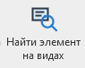
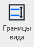
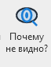
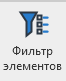

Скопируйте активный вид вместе с положением и направлением камеры, выделенными элементами и границами обрезки. Работает и для 3D, и для 2D видов. Коллега вставит код и откроет тот же вид без поиска.
Кнопка «Сохранить вид» предлагает три варианта:
скриншот с QR-кодом и текстовым кодом;
скриншот с QR-кодом;
только текстовый код.
Чтобы перейти к сохранённому месту, вставьте код или картинку с QR-кодом в «Вставить код вида». Код можно отправить коллеге или сохранить себе, чтобы вернуться к месту позже.
Код открывается в том же проекте. Между смежными разделами одного проекта тоже должен работать, но в таких случаях проверяйте результат.
Найти элемент на видах Бесплатно

Показывает все виды, на которых есть нужный элемент.
Откройте инструмент и выберите элемент в проекте.
Укажите, где искать: на всех видах или только на видах на листах.
Дождитесь результата. На небольшом проекте это занимает 20–30 секунд.
На крупных проектах поиск идёт минуты, а иногда и десятки минут. Для таких проектов ищите только по видам на листах. Поиск можно остановить кнопкой «Прервать».
Открывает ваш план или разрез в 3D с теми же габаритами вида и глубиной видимости.
3D в 2D
Включает выбор граней обрезки 3D вида и строит по их габаритам разрез, план этажа или план потолка.
Выровнять 3D-границы
Поворачивает границу обрезки так, чтобы она легла по выбранной поверхности.
Активный рабочий набор должен быть видим на вашем виде.
Границы вида Pro

Позволяет ползунками менять в реальном времени положение и глубину активного вида. Окно подстраивается под тип вида: для плана этажа и для разреза набор настроек разный.
Каждое движение ползунка в Revit считается транзакцией. Не злоупотребляйте этим на тяжёлых моделях: производительность на них упирается в сам Revit.
Почему не видно? Бесплатно

Выясняет, почему элемент не виден на виде.
Выберите элемент и откройте вид, на котором его не видно.
В окне инструмента нажмите «Запустить».
Плагин выдаст список проверок (категория, рабочий набор, фильтры, секущий диапазон и другие) и отметит причину.
Размеры по линии Pro
Настройки размеров
Ставит цепочку размеров от одной точки до другой.
Нажмите «Размеры по линии».
Укажите на плане первую точку, затем вторую.
Плагин построит размеры между ними по горизонтали или по вертикали. Размеры ставятся по стенам и осям.
Что настраивается в «Настройках размеров»:
какие элементы образмеривать: стены, оси;
игнорирование стен до заданной толщины, чтобы не образмеривать отделку;
образмеривание окон и дверей рядом с линией: допуск до линии, категории и сторона линии. Элементы, которые параллельны линии, но перекрыты стеной, не образмериваются;
способ привязки к стенам: по граням с толщиной, по центру стены или по граням без толщины;
«Раздельные размеры»: вместо одной цепочки создаётся отдельный размер для каждой пары соседних привязок.
Фильтр элементов Pro

Отбор элементов по категории, параметрам и их значениям. Привычный инструмент для тех, кто работал с подобным фильтром ModPlus, с дополнительными возможностями.
В левой верхней части выберите, среди каких элементов искать. По умолчанию это «Выбранные элементы».
В центре выберите категорию, и плагин покажет её параметры.
Выберите значения параметра и нажмите «Найти и выделить». На больших моделях это занимает несколько секунд.
Список можно обновить, если проект изменился, и убрать из выбора элементы, которые находятся в группе или сборке.
Окно переноса параметров: отбор стен, пары параметров и найденные стены
«Неоднозначные» стены находятся сразу в нескольких помещениях. Если включить «Заполнить неоднозначные», стена получит значения первого найденного помещения.
То же место Бесплатно
Сохраняет любое место на плане и открывает это же место на плане другого этажа или на 3D виде. Верхняя кнопка запоминает положение, нижняя переносит в это место на текущем виде.
Обновления, уроки и достижения Бесплатно
Окно «Обновить RabinBIM» показывает установленную версию и проверяет наличие новой. Автоматическую проверку можно включить при запуске и при закрытии Revit. Для установки обновления Revit нужно закрыть на несколько секунд.
Если новая версия работает хуже предыдущей, на вкладке «Настройки» можно установить любую из доступных версий кнопкой «Установить выбранную».
Чтобы подключить профиль, получите код в личном кабинете RabinBIM. В Revit откройте «Обновить RabinBIM» → «Лицензия…» и введите код.
В «Уроках» собраны интерактивные задания внутри Revit: подсвечивают нужные кнопки и проверяют действия по шагам.
На вкладке «Достижения» можно включить счётчик достижений за работу в плагине. Он считает только действия внутри Revit и не замедляет работу.
Источники и загрузка отчёта Pro
Сначала нужно указать, где лежат отчёты по коллизиям.
Откройте вкладку «Настройки» и найдите «Источники отчётов HTML/XML».
Нажмите «Добавить», введите имя проекта (любое удобное) и путь к папке с отчётами по датам.
Нажмите «Сохранить пути».
Путь к папке с коллизиями можно уточнить у коллег или BIM-координатора.
Если нет доступа к рабочим дискам
Укажите «Корневую папку», куда сохранять отчёты, и «Публичную ссылку на архивы» с Яндекс Диска, куда выкладываются ZIP-архивы отчётов. Кнопка «Проверить обновления» сравнит дату в имени архива с вашей версией, скачает новую в указанную папку и распакует её под тем же названием. На это уходит от нескольких секунд до пары минут, в зависимости от интернета и размера файла.
Загрузка отчёта
Выберите проект и версию (папка с датой в формате ГГГГ.ММ.ДД) и нажмите «Загрузить». Дальше можно работать с коллизиями или смотреть отчёты и аналитику.
Проект
Выбирает настроенный объект.
Версия
Выбирает папку даты. При открытии автоматически выбирается самая новая.
Обновить
Заново сканирует папку и перечитывает список отчётов.
Загрузить
Запускает загрузку выбранного отчёта.
Отчёт и Папка
Ручная загрузка отдельного файла или каталога.
На главной странице отдельно показаны последние изменения и комментарии: автоматические записи (смена статуса, назначение) и обычные комментарии в двух независимых списках. Диапазон записей задаётся полями «с» и «по», двойной щелчок по записи открывает нужную коллизию.
Отработка коллизий Pro
Откройте вкладку «Коллизии». Первый уровень списка: отчёт (тест) Navisworks. Второй уровень: группа. Одиночные коллизии лежат в группе «Без группы». Щелчок по заголовку группы показывает общее изображение группы, если оно есть. У строки видны имя, ось и слой, группа, назначение и цветной статус. Пустые отчёты скрыты, одинаково названные группы не объединяются.
Поиск
Поиск идёт по имени коллизии, отчёта и теста, группе, статусу, назначению, координатам, оси и слою, а также по данным обоих элементов: ID, модели, категории, семейству и типу.
Запрос
Результат
АР
Коллизии, где встречается «АР»
АР & ОВ1
Должны встретиться оба фрагмента
стена | временная
Найти «стена», исключив «временная»
АР & ОВ1 | duplicate; тест
Сочетание обязательных и исключаемых слов
<Нет уровня>
Коллизии, у которых в отчёте нет значения слоя
_АР_
Точное обозначение раздела внутри имени модели или проверки
Знак «&» значит «и». После «|» перечисляются исключения, несколько исключений разделяются запятой или точкой с запятой. Enter запускает поиск, «Сброс» очищает строку и фильтры.
Быстрые фильтры
«Мои»: только коллизии, назначенные текущему пользователю Revit.
«Сегодня»: коллизии, с которыми сегодня работали.
Фильтр статуса: все, активные, проанализированные, подтверждённые или исправленные.
Статусы
АктивнаяОтработанаПодтвержденаИсправлена
Массовая работа
Несколько строк выбираются как в проводнике: Ctrl добавляет отдельные записи, Shift выбирает диапазон. Смена статуса у одной из выбранных строк применяет тот же статус ко всем выбранным, назначение применяется ко всей выбранной группе строк. Перед массовой операцией проверьте подсветку и итоговый счётчик.
Карточка коллизии
Сверху имя и тонкая цветная полоса статуса.
Ниже: дата обнаружения, точка конфликта, ось и слой.
Изображение увеличивается при наведении, если это включено в настройках.
Блоки «Элемент 1» и «Элемент 2»: ID, модель, категория, семейство, тип. ID можно скопировать через Ctrl+C, а щелчок правой кнопкой по ID копирует его сразу.
Находит элементы по ID в активном документе и загруженных связях, сбрасывает прежнюю временную изоляцию, временно изолирует найденное и приближает вид.
3D обрезка
Создаёт или использует ваш личный 3D вид, выделяет элементы и направляет камеру на область коллизии. Сначала плагин пробует построить область по геометрии пересечения, если не получилось, по габаритам элементов. Если элементы не найдены, область строится вокруг точки конфликта с учётом значения «Расстояние» и коэффициента из настроек.
3D всей группы
Собирает элементы всех коллизий группы и делает общую обрезку. Удобно смотреть серию однотипных пересечений, не открывая каждую строку.
Отчёты, сравнение и аналитика Pro
Отчёты
Динамика коллизий по папкам дат: карточки (всего, активные, исправленные, прогресс, проанализированные, подтверждённые, число дат и отчётов), столбчатая диаграмма по статусам и дням, срез общий, по проверке или по разделу. «Excel» выгружает таблицы и диаграммы в настоящий файл Excel.
Фильтры и выгрузка коллизий
«Новые» показывает коллизии, появившиеся с прошлой версии отчёта.
«Старые» позволяет отобрать неисправленные коллизии по возрасту.
«Выгрузить…» сохраняет показанные коллизии. Для передачи смежникам выберите HTML с изображениями. Такой отчёт можно сохранить в PDF через печать в браузере. Excel включает изображения, фильтры, сводку по тестам и комментарии.
Сравнение
Выберите две версии и нажмите «Сравнить». Таблица покажет число коллизий в каждом тесте и разницу. Отрицательная разница значит, что коллизий стало меньше, положительная значит, что больше. Если в одной из дат нет такого отчёта, его значение для этой даты считается нулевым.
Аналитика
Область можно переключать между текущим отчётом и всеми отчётами папки. Для сводной аналитики можно выбрать конкретные непустые отчёты.
Режим
Что показывает
Сводка
Коллизии, уникальные элементы и общее распределение
Разделы
Распределение по обозначениям разделов: АР, КР, ОВ, ВК и другим
Уровни
Распределение по полю «Слой». Пустые значения подписаны «<Нет уровня>»
Категории
Категории Revit и Navisworks, которые участвуют в коллизиях
Пересечения категорий
Какие пары категорий пересекаются чаще всего
Семейства / имя элемента
Семейства, типы или имена элементов
Пересечения разделов
Какие пары дисциплин дают больше всего коллизий
Настройки и архивы Pro
Изображение
«Увеличивать изображение при наведении» включает предпросмотр, коэффициент задаёт масштаб, итоговый размер ограничен экраном.
3D-обрезка
«Строить область по геометрии пересечения» включает точный способ, «Увеличение области» задаёт запас вокруг пересечения. Если пересечение вычислить нельзя, берётся безопасная обрезка по границам или точке конфликта.
Сохранение
Кнопка «Сохранить настройки» под блоками изображения, 3D-обрезки и горячих клавиш сохраняет все три группы.
Публичные архивы
«Проверить обновления» проверяет все настроенные ссылки, ничего не скачивая. «Скачать архивы» загружает недостающие ZIP и распаковывает их в корневую папку проекта. Имя архива должно быть датой, например 2026.07.28.zip.
Импорт изменений
Выбирает внешнюю папку и объединяет файлы с исправлениями (статусы и комментарии коллег) с вашей версией.
Журнал
«Обновить» перечитывает журнал текущего дня, ошибки выделены цветом, «Очистить» удаляет журнал после подтверждения. Записи содержат время, уровень, операцию и длительности.
Если в модели только начинается работа с отверстиями, откройте «Настройки кубиков и отверстий» и выберите «Проверить модель» в зависимости от того, какая модель открыта. Плагин проверит, что в ней есть нужные семейства и параметры.
Основная модель Pro
Размещает отверстия в местах кубиков из связанной модели и позволяет отслеживать изменения.
Отверстия привязываются к кубикам по уникальному ID, который записывается в параметр «ID_Кубика». Если у кубика уже есть отверстие, в этом списке остаётся отверстие, а кубик пропадает.
Область проверки: вся модель или активный вид. По расположению: стены и перекрытия, только стены или только перекрытия.
Окно «Основная модель»: область проверки, состояние каждого кубика и кнопки действий
Состояния
Если в проект загружена связь с отверстиями, в столбце «Состояние» видны статусы:
Нет отверстия
К кубику не привязано отверстие
ID не заполнен
Отверстие есть, но не привязано к кубику
Соответствует
Отверстие полностью совпадает по габаритам и не смещено
Перенести
Отверстие смещено относительно привязанного кубика
Изменить габариты
Габариты отверстия не совпадают с габаритами кубика
Удалить
У связанного кубика статус «Удалить»
Кнопки
Обновить
Обновляет список.
Выделить
Выделяет выбранный элемент списка. Для элементов связи (кубиков) не работает.
Приблизить
Приближает выбранный элемент на виде.
Заполнить ID
Привязывает отверстия к кубикам, которые совпадают по расположению и габаритам. На выбор: выбранным (выбираются после нажатия), всем на виде, всем в документе.
Связать вручную
То же, но вы сами указываете и отверстие, и кубик.
Создать отверстие
Создаёт отверстия по кубикам. Выбор области такой же, как у «Заполнить ID».
Выгрузить отчёт
Выгружает полный отчёт по кубикам и отверстиям в Excel.
Файл кубиков Pro
Показывает изменения в файле кубиков с момента, когда вы в последний раз сохраняли снимок. Кнопка «Сохранить снимок» записывает данные по всем кубикам модели во внутренние настройки плагина. При следующих открытиях можно посмотреть, какие кубики добавлены, какие удалены и какие изменились.
Окно «Файл кубиков»: сравнение снимков и список изменений
Плагин хранит не больше пяти снимков, чтобы не засорять диск. При превышении лимита самый старый снимок перезаписывается.
Остальные кнопки работают так же, как в окне «Основная модель».
Настройки Pro
Настройки уже подобраны под типовые проекты, обычно их достаточно не менять. Правка нужна, если у вас особые семейства или параметры.
Профиль проекта
Можно создать несколько вариантов настроек и переключать их. Введите имя профиля и после правок нажмите «Сохранить».
Прочитать модель
Собирает все семейства и параметры проекта. На больших моделях это может занять 5 минут и больше.
Вкладка «Семейства»
Здесь указываются семейства кубиков и отверстий. Основные уже внесены, добавляйте только свои. Можно выбрать из модели или записать имя семейства и тип, но тогда без ошибок.
Связи параметров кубиков и отверстий. Первые четыре поля общие, там обычно ничего менять не нужно, но можно задать допуск для сверки положения отверстия относительно кубика. «Габаритные параметры по связям семейств» позволяют связать отверстие с кубиком, если появилось что-то новое. Дальше выбирается схема расчёта. Здесь же можно отслеживать изменения заданных параметров в «Снимках по кубикам».
Чтобы поделиться настройками, выберите профиль и нажмите «Экспортировать». Коллега нажимает «Импортировать». После правок не забудьте нажать «Сохранить».
Обрезка по уровням Бесплатно
Откройте 3D-вид и запустите «Виды → Обрезка по уровням».
Укажите нижний и верхний уровни. Примените обрезку и проверьте границы на виде.
Элемент в спецификациях Pro
Выберите элемент модели и запустите «Контроль → Элемент в спецификациях».
Посмотрите список спецификаций на листах, в которых найден элемент.
Сверка АР–КЖ Pro
Откройте модель АР с загруженной связью КЖ или КР. Если при сверке нужно учесть запроектированные отверстия, загрузите также связь с кубиками отверстий, например «ИОС_Отверстия». На ленте RabinBIM откройте «Контроль → Сверка АР–КЖ».
Настройки сверки
Модели
Связь КЖ
Выберите связь с конструктивной моделью.
Что проверить
Чтобы проверить отдельный участок, подготовьте его на 3D-виде и выберите область «Активный вид». В сверку попадут элементы в пределах этого вида.
Категории
Отметьте категории элементов, которые нужно сравнить.
Монолит
Параметр типа и значения
Если железобетонные конструкции отмечены значением «Монолит» в параметре «Группа модели», оставьте этот параметр. При необходимости добавьте другие значения, принятые в проекте.
Отбирать элементы КЖ
Включите отбор, если в связанной модели железобетонные элементы помечены тем же параметром. Если параметр в связи не заполнен, оставьте отбор выключенным.
Не сверять типы
Укажите типы элементов из модели КЖ, которые нужно исключить из сравнения.
Материалы
Для многослойных стен укажите материалы монолита, чтобы исключить из сверки утеплитель и другие слои.
Отверстия
Связь отверстий
Выберите модель с кубиками отверстий. По ним RabinBIM может исключить расхождения в местах, где отверстие уже вырезано в АР, а в КЖ его ещё нет.
Шум и места
Пороги по толщине и объёму
Задайте минимальные размеры расхождений, которые нужно показать.
Нажмите «Сверить». В большой модели подготовка отчёта может занять несколько минут.
Окно расхождений
В верхней части окна можно отфильтровать расхождения, изменить минимальный порог и найти нужные элементы через поиск. Сортируйте строки по заголовкам столбцов. Чтобы выделить диапазон, нажмите первую строку, затем последнюю с зажатой клавишей Shift. Для выбора отдельных строк используйте Ctrl.
Показать разницу
Показывает расхождения цветными блоками на виде.
С элементами (без связи)
Временно изолирует участвующие элементы АР. Элементы КЖ из связи отображаются серыми формами.
С элементами и связью
Временно изолирует на виде элементы АР и связь КЖ, участвующие в выбранных расхождениях.
Убрать разницу
Скрывает цветовые обозначения расхождений.
Номера мест
Включает или скрывает номера мест на виде.
Найти в списке
Выберите «Элемент АР» для элемента текущей модели или «Элемент КР» для элемента связи. RabinBIM найдёт его расхождения в списке, если они есть.
Сверка
Команды этой группы позволяют временно исключить из сравнения отдельные элементы или типы.
Экспорт CSV
Сохраняет таблицу расхождений в CSV. Файл можно открыть в Excel.
Порядок работы
Выделите все строки списка через Shift и нажмите «Показать разницу».
Осмотрите вид и запишите номера мест, которые нужно проверить.
Вернитесь к списку, отсортируйте его по столбцу «Места» и выберите нужную строку.
Покажите расхождение с элементами и связью или без связи. При необходимости сбросьте временную изоляцию в Revit. Все элементы снова появятся на виде, а цветовые обозначения сохранятся.
Зафиксируйте подтверждённое расхождение командой «Скриншот с QR-кодом» или скопируйте текстовый код вида. Команда «Вставить код вида» восстановит ракурс, обрезку и выделение по коду или скриншоту.
Цветовые обозначения и номера мест — временная графика вида. Она видна только вам и не меняет модель.
Синхронизация проектов Pro
Откройте «Координация → Синхронизация проектов».
Укажите источник и проверьте состав данных перед переносом в текущий проект.
Положение связей Бесплатно
В модели с загруженными связями откройте «Координация → Положение связей».
Проверьте размещение по общим координатам и осям. Разберите расхождения перед изменением положения связей.
РН групп Бесплатно
Выберите экземпляры групп в модели с общим доступом.
Запустите «BIM → РН групп». Команда последовательно назначает группе рабочие наборы её элементов, затем восстанавливает исходный рабочий набор группы.
Параметры семейства Pro
Откройте семейство в редакторе и запустите «BIM → Параметры семейства».
Просмотрите список параметров, формулы и зависимости между ними.
Состав РН Бесплатно
Откройте модель с общим доступом и запустите «BIM → Состав РН».
Укажите рабочий набор и просмотрите его элементы. Закрытый набор можно проверить без его открытия.
Опоры ограждений Pro
Откройте «Оформление → Опоры ограждений» — окно не блокирует работу в Revit.
Выберите одно или несколько ограждений, задайте типы опор, шаг или количество и отступы от краёв.
Выберите одно или несколько ограждений и запустите «Оформление → Развёртка ограждения».
Выберите режим: чертёжный вид (развёртка вдоль траектории с поворотами и уклоном) или разрезы вдоль ограждения, при необходимости укажите шаблон вида и лист.
Плагин построит развёртку с поручнями, балясинами, опорами, изломами и размерами между опорами.
Загрузка связей Бесплатно
Откройте «BIM → Загрузка связей» и выберите источник: Revit Server (структура папок кешируется) или файлы с диска.
Отметьте нужные модели, задайте рабочие наборы типа и экземпляра и способ размещения.
Нажмите «Загрузить» для пакетного добавления или «Обновить», чтобы удалить выбранные связи и загрузить их заново.
Инструкции RabinBIM
Плагин для Revit 2021–2024
Размеры, коллизии и виды без ручной рутины
Вкладка RabinBIM добавляет в Revit готовые инструменты для архитекторов, конструкторов и BIM-координаторов. Первые 30 дней Pro бесплатно, без карты. Часть инструментов бесплатна навсегда.
Разбор отчётов Navisworks по группам, статусы, комментарии, выгрузка в HTML и Excel.
Почему не видно?
Проверяет категорию, рабочий набор, фильтры и секущий диапазон и называет причину.
Размеры по линии
Цепочка размеров по стенам и осям между двумя точками на плане.
Фильтр элементов
Отбор по категории, параметрам и значениям, наборы выделений и их объединение.
Помещения → стены
Переносит параметры помещений в стены, которые в них находятся или граничат с ними.
Код вида
Скриншот с QR-кодом: коллега вставит его и откроет тот же вид, с камерой, обрезкой и выделением.
Вставить код видаВид открыт
Кубики и отверстия
Размещение отверстий по кубикам, привязка по ID и отслеживание изменений.
Уроки прямо в Revit
Интерактивные уроки подсвечивают нужные кнопки и ведут по шагам, не выходя из программы.
Сохранить вид
Размеры по линии
Фильтр элементов
Шаг 1 из 5. Откройте вкладку RabinBIMШаг 2 из 5. Нажмите «Размеры по линии»Шаг 3 из 5. Проведите линию через стены
Три шага до первого инструмента
1
Скачайте и установите
Установщик сам найдёт Revit с 2021 по 2024 и поставит плагин в каждый. Права администратора нужны только для установки на всех пользователей.
2
Подключите профиль
Зарегистрируйтесь на сайте, получите код в личном кабинете и введите его в окне «Обновить RabinBIM» → «Лицензия…». Pro откроется на 30 дней.
3
Откройте вкладку RabinBIM
Запустите любой инструмент или пройдите урок: он подскажет, какие кнопки нажимать.
Часть инструментов бесплатна навсегда
Первые 30 дней Pro открыт целиком. Потом бесплатные инструменты остаются, а Pro можно оформить по ключу.
Инструмент
Доступ
Уроки в Revit
Бесплатно
Сохранить вид и код вида
Бесплатно
Найти элемент на видах
Бесплатно
Почему не видно?
Бесплатно
Обрезка по уровням
Бесплатно
То же место
Бесплатно
Положение связей
Бесплатно
Состав рабочих наборов
Бесплатно
РН групп
Бесплатно
Загрузка связей
Бесплатно
Размеры по линии
Pro
Опоры ограждений
Pro
Развёртка ограждения
Pro
Менеджер коллизий
Pro
Фильтр элементов
Pro
Границы вида и 2D в 3D
Pro
Помещения → стены
Pro
Сверка АР–КЖ
Pro
Синхронизация проектов
Pro
Параметры семейства
Pro
Кубики и отверстия
Pro
Элемент в спецификациях
Pro
Стоимость Pro объявим к выпуску.
Что обычно спрашивают перед установкой
Какие версии Revit поддерживаются?
RabinBIM поддерживает Revit 2021, 2022, 2023 и 2024. Установщик находит поддерживаемые версии Revit на компьютере и устанавливает плагин для каждой из них.
Когда начинается пробный период и что будет через 30 дней?
Пробный период Pro начинается при первом подключении профиля в Revit. Он доступен один раз на аккаунт и компьютер. Через 30 дней бесплатные инструменты остаются доступны. Для продолжения работы с Pro нужна действующая лицензия.
Можно ли пользоваться Pro бесплатно?
Да: после 30-дневного пробного периода можно получать дополнительные дни подписки Pro за найденные недочёты, баги и полезные замечания по работе плагина. Присылайте описание проблемы (желательно со скриншотом и версией Revit) в Telegram или на почту Rabin.corp@yandex.com — за подтверждённые находки начисляем бонусные дни Pro на ваш аккаунт.
Как подключить Revit к профилю?
В личном кабинете нажмите «Подключить Revit». Введите полученный код в окне «Обновить RabinBIM» → «Лицензия…». Код действует 10 минут.
Нужен ли интернет?
Интернет нужен для скачивания, входа в профиль и первой активации. RabinBIM Pro работает офлайн до 24 часов с последней успешной проверки, пока действует лицензия. Для синхронизации с личным кабинетом нужна сеть.
Какие данные передаются в личный кабинет?
При подключении профиля сервер получает данные об активации и компьютере. Для статистики и достижений плагин синхронизирует сведения об использовании инструментов. При работе с общими отчётами и коллизиями состав данных зависит от настроенного источника и функций организации.
На скольких компьютерах работает лицензия?
Лимит зависит от лицензии. Чтобы освободить место для другого компьютера, откройте в личном кабинете раздел «Ключи и компьютеры» и нажмите «Отвязать».
Можно ли установить без прав администратора?
Да. В установщике выберите «Только для меня».
Почему Windows SmartScreen или Revit предупреждают при установке?
Установщик и файлы плагина пока распространяются без коммерческого сертификата подписи кода, поэтому Windows SmartScreen может показать предупреждение о неизвестном издателе — это стандартная реакция на новые программы. Чтобы продолжить, нажмите «Подробнее» → «Выполнить в любом случае». При первом запуске Revit также может спросить разрешение на загрузку надстройки RabinBIM — выберите «Всегда загружать». Скачивайте установщик только с официального сайта rabinbim.ru; при желании файл можно заранее проверить на VirusTotal.
Где найти инструкции по инструментам RabinBIM?
На сайте откройте инструкции или страницу нужного инструмента. У некоторых инструментов есть встроенные интерактивные инструкции, которые ведут по шагам прямо в Revit. Вопросы можно задать в Telegram или на почту Rabin.corp@yandex.com.
Что такое уроки по Revit?
Уроки помогают освоить рабочие приёмы Revit на практических примерах. Задания выполняются прямо в Revit, с пошаговыми подсказками.